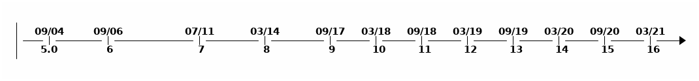

<style type="text/css"> .reveal { font-size: 30px; } .reveal p { text-align: left; } .reveal ul { display: block; } .reveal ol { display: block; } </style> # Java 9 - 17 (to 25 in progress) ## What happened the last ~11 years ### Matthias ---- ## Disclaimer * Part I (tried to focus on language Features & API) * maybe following parts with * java "internal" changes (e.g. Garbage Collector, Performance, tooling) * deprecations * no guarantee on completeness ---- ## Sources * [OpenJDK](https://openjdk.java.net/jeps/0) * [Marcobehler.com](https://www.marcobehler.com/guides/a-guide-to-java-versions-and-features#_why_are_companies_still_stuck_with_java_8) * [.Lost in Coding](https://ondro.inginea.eu/index.php/new-features-in-java-versions-since-java-8/) * [Advanced Web Machinery](https://advancedweb.hu/a-categorized-list-of-all-java-and-jvm-features-since-jdk-8-to-16/#new-apis) ---- ## Java history <div> <!-- .element style="border: 0px; box-shadow: 0 0 0 0" --> </div><!-- .element align="center" --> ---- ## Why Java 8 * rich feature set * Stream API (Collections) * Lambda Functions & Functional Interfaces * Optionals * New Date Time API * changed licensing which lead to confusion (Java Distributions) * initial problems with commonly used build tools * is a LTS version --- # Java 9 > [OpenJDK 9](https://openjdk.java.net/projects/jdk9/) ---- ## Collection factory methods ```Java List<String> list = List.of("one", "two", "three"); Set<String> set = Set.of("one", "two", "three"); Map<String, String> map = Map.of("foo", "one", "bar", "two"); ``` ## Streams * ```takeWhile```, ```dropWhile```, [```iterate```](https://docs.oracle.com/javase/8/docs/api/java/util/stream/Stream.html#iterate-T-java.util.function.UnaryOperator-) with condition ```Java Stream<String> stream = Stream.iterate("", s -> s + "s") .takeWhile(s -> s.length() < 10); ``` ## Optionals: ifPresentOrElse() ```Java user.ifPresentOrElse(this::displayAccount, this::displayLogin); ``` ---- ## JShell (Java Playground) ``` % jshell | Welcome to JShell -- Version 16.0.1 | For an introduction type: /help intro jshell> int x = 10 x ==> 10 jshell> System.out.println(x > 5 ? "big number" : "small number") big number ``` ### Exit with ``` jshell> /exit | Goodbye ``` (You are welcome ;-) ) ---- ## misc * [TLS1.3 Support](https://openjdk.java.net/jeps/332) * [Java Platform module System](https://openjdk.java.net/jeps/332) * Flow API (reactive Streams) * [MultiResolutionImage](https://docs.oracle.com/javase/9/docs/api/java/awt/image/MultiResolutionImage.html) * [Class.getPackageName()](https://docs.oracle.com/en/java/javase/16/docs/api/java.base/java/lang/Class.html#getPackageName()) --- # Java 10 > [OpenJDK 10](https://openjdk.java.net/projects/jdk/10/) ---- ## Local-variable type Inference: ```var```-keyword ```Java // Pre-Java 10 String myName = "Volker"; // With Java 10 var myName = "Volker" ``` --- # Java 11 > [OpenJDK 11](https://openjdk.java.net/projects/jdk/11/) ---- ## new methods on ```String``` * ```repeat()```, ```isBlank()```, ```strip()```, ```lines()``` ```Java "".isBlank(); // -> true "Each\nline\ncounts".lines().toList(); // -> Stream of lines " we messed ist up ".strip(); // -> "we messed it up" "Hello".repeat(3) // -> "HelloHelloHello" ``` ## ```var``` supported by lambda parameters ```Java (var firstName, var lastName) -> firstName + lastName ``` ---- ## HTTPClient (Preview >= 9) <div> ```Java import java.io.IOException; import java.net.http.HttpClient; import java.net.http.HttpRequest; import java.net.URI; import java.net.http.HttpResponse; public class HttpClientExample { public static void main(String[] args) throws IOException, InterruptedException { HttpClient httpClient = HttpClient.newBuilder().build(); HttpRequest request = HttpRequest.newBuilder() .uri(URI.create("https://www.google.com/")) .GET() .build(); HttpResponse<String> response = httpClient.send(request, HttpResponse.BodyHandlers.ofString()); System.out.println(response.statusCode()); System.out.println(response.body()); } } ``` </div><!-- .element style="font-size: 0.8em;" --> --- # Java 12 > [OpenJDK 12](https://openjdk.java.net/projects/jdk/12/) ---- ## new methods on ```String``` * ```indent()```, ```transform()``` ## [CompactNumberFormat class](https://docs.oracle.com/en/java/javase/12/docs/api/java.base/java/text/CompactNumberFormat.html) * formating numbers for a Local * US: 1000 -> 1K, 1000000 -> 1M * IN: 1000 -> 1 हज़ार, 50000000 -> 5 क * DE: 1000 -> 1.000, 1000000 -> 1 Mio ## Unicode 11 support --- # Java 13 > [OpenJDK 13](https://openjdk.java.net/projects/jdk/13/) ## Unicode 12.1 support --- # Java 14 > [OpenJDK 14](https://openjdk.java.net/projects/jdk/14/) ---- ## Switch Expression (Preview: 12, 13) * new (including new ```yield``` keyword) * no fall-through * single statement and code block * supporting value return (with yield) ```Java int numLetters = switch (day) { case MONDAY, FRIDAY, SUNDAY -> 6; case TUESDAY -> 7; default -> { String s = day.toString(); int result = s.length(); yield result; } }; ``` --- # Java 15 > [OpenJDK 15](https://openjdk.java.net/projects/jdk/15/) ---- ## Helpfull NullPointerException message <div> ```Java public class NullPointerExample { public static void main(String[] args) { System.out.println("NullPointer Exception message:"); MyClass myClass = null; try { System.out.println(myClass.myName.length()); }catch (Exception e){ e.printStackTrace(); } myClass = new MyClass(); try { System.out.println(myClass.myName.length()); }catch (Exception e){ e.printStackTrace(); } } private static class MyClass{ protected String myName; protected MyClass meAgain; } } ``` * old ``` NullPointer Exception message: java.lang.NullPointerException: null at de.mubn.java15.NullPointerExample.main(NullPointerExample.java:11) java.lang.NullPointerException: null at de.mubn.java15.NullPointerExample.main(NullPointerExample.java:20) ``` * new ``` NullPointer Exception message: java.lang.NullPointerException: Cannot read field "myName" because "myClass" is null at de.mubn.java15.NullPointerExample.main(NullPointerExample.java:11) java.lang.NullPointerException: Cannot invoke "String.length()" because "myClass.myName" is null at de.mubn.java15.NullPointerExample.main(NullPointerExample.java:20) ``` </div><!-- .element style="font-size: 0.6em;" --> ---- ## Text Blocks (Preview: 13, 14) <div> * old ```Java String html = "<html>\n" + " <body>\n" + " <p>Hello, world</p>\n" + " </body>\n" + "</html>"; ``` * new ```Java String html = """ <html> <body> <p>Hello, world</p> </body> </html> """; ``` </div><!-- .element style="font-size: 0.9em;" --> --- # Java 16 > [OpenJDK 16](https://openjdk.java.net/projects/jdk/16/) ---- ## Pattern Matching for instanceof ```Java if (x instanceOf String s) { String a = s; } ``` ## Record Type * immutable data Class * implicit methods -> avoiding boiler plate code * getters, constructor, equals, hashCode, toString ```Java record Point(int x, int y){ } Point myPoint = new Point(10, 15); myPoint.x(); // -> 10 System.out.println(myPoint); // -> "Point[x=10, y=15]" ``` --- # Java 17 > [OpenJDK 17](https://openjdk.java.net/projects/jdk/17/) ---- ## Sealed Classes (PREVIEW 16) * Control over inheritance - only explicitly permitted sub-classes * permitted sub-classes must exist * permitted sub-classes must decide to seal again (```sealed```), be ```final``` or open again with open up (```non-sealed```) ```Java public abstract sealed class Animal permits Dog, Bird, Fish { // ... } public final class Dog extends Animal { // ... } public non-sealed class Bird extends Animal { // ... } public sealed class Fish extends Animal permits SaltWaterFish { // ... } public final class SaltWaterFish extends Fish { // ... } ``` ---- ## Sealed Interfaces (PREVIEW 16) * Control over implementation - only explicitly permitted classes can implement * permitted classes must exist * permitted classes must decide to seal again (```sealed```), be ```final``` or open again with open up (```non-sealed```) ```Java sealed interface Payable permits Revolut, Wero, Paypal { // ... } public final class Revolut implements Payable { // ... } public non-sealed class Paypal implements Payable { // ... } public sealed class Wero implements Payable permits WeroLight { // ... } public final class WeroLight extends WeroLight { // ... } ``` ---- ## Switch-Case with pattern Matching ```Java switch(currentAnimal){ case Dog currentDog -> currentDog.bark(); case Bird currentBird -> currentBird.tweet(); case Fish currentFish -> currentFish.bubble(); } ``` --- # Java 18 > [OpenJDK 18](https://openjdk.org/projects/jdk/18/) ### UTF-8 by default (in Java APIs) [JEP400](https://openjdk.org/jeps/400) ### Simple WebServer for testing [JEP408](https://openjdk.org/jeps/408) ### Code snippets in JavaDoc [JEP413](https://openjdk.org/jeps/413) --- # UP TO YOU 🫵 > Whats your favorit new Java feature?